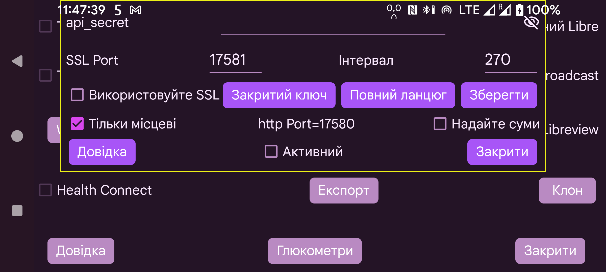

ar be de es fr hi it ja nl pl ru sv tr uk uz zh en
Juggluco містить вебсервер, через який інші програми можуть отримувати значення глюкози. Його можна використовувати з програмами для годинників xDrip і деякими програмами Nightscout.
Програми, створені для вебсервера xDrip, налаштовуються порівняно просто: увімкніть «Активний». Після цього вони можуть отримувати глюкозу з 127.0.0.1 через порт 17580. URL сервера Nightscout: http://127.0.0.1:17580
Його також підтримують деякі програми-послідовники Nightscout. xDrip, Diabox, програма Windows Floating Glucose і віджет для Windows, Linux та macOS (Owlet) можуть використовувати HTTP, якщо не встановлено «Тільки місцеві». Те саме на macOS стосується Nightscout Menu Bar, Gluco Status і Gluco Tracker з App Store. Лише HTTP потрібен також для Nightscouter і LoopFollow на iOS та Nightguard на iOS і watchOS.
Щоб звертатися до Juggluco через інтернет, потрібно перенаправити порт на модемі. Див.:
https://www.makeuseof.com/tag/what-is-port-forwarding-and-how-can-it-help-me
Ліве середнє меню→Клон→Додати з’єднання→Довідка.
Інші послідовники Nightscout підтримують лише HTTPS, для якого Juggluco потрібен автентифікований SSL-ключ доменного імені, що використовується для доступу. Якщо зовнішня IP-адреса має ім’я вузла, безкоштовний сертифікат можна отримати через Certbot. Якщо зовнішня IP-адреса не має імені вузла, використати це неможливо. Безкоштовне доменне ім’я можна отримати на https://www.freenom.com. Я спробував, але за кілька тижнів домен без повідомлення забрали, а під час повторної реєстрації він уже був платним. Ім’я вузла можна придбати за кілька євро на рік, наприклад у https://www.strato.nl/domeinnaam.
Після встановлення Certbot і перенаправлення порту 80 (HTTP) з модема на комп’ютер достатньо виконати:
certbot certonly --standalone --preferred-challenges http -d моє_ім’я_вузла
Див. https://devpress.csdn.net/linux/62e7999e907d7d59d1c8cfd0.html.
Після використання Certbot приватний ключ я знайшов у /etc/letsencrypt/live/myhostname/privkey.pem, а повний ланцюжок — у /etc/letsencrypt/live/myhostname/fullchain.pem. «myhostname» — використане мною ім’я вузла.
Якщо файли ключів отримано від центру сертифікації SSL, передайте їх Juggluco. Приватний ключ читається кнопкою «Закритий ключ», а повний ланцюжок — кнопкою «Повний ланцюг.
Якщо потрібно лише надсилати значення глюкози з одного Android-пристрою на інший, краще використовувати функцію Клон Juggluco: ліве середнє меню→Клон.
SSL потрібен для програм Android AAPS, Diabetes:M, Nightwatch і Checkmate, а також Sugarmate на macOS/iOS та Xdrip4ios, Shuggah і Cockpit на iOS. Як URL сервера Nightscout укажіть:
https://ім’я_вузла:порт
hostname — ім’я, для якого Juggluco отримала автентифікований ключ; Port — зовнішній порт, перенаправлений на порт, указаний на цьому екрані; типовий внутрішній порт — 17581.
AAPS також може використовувати вебсервер Juggluco як сервер Nightscout. Для цього виберіть NSClientV3 в AAPS із такими параметрами:
як токен доступу NS використайте api_secret, указаний тут;
вимкніть «Підключатися до WebSocket»;
у розділі «Синхронізація» вимкніть усі завантаження. Увімкніть лише:
отримання/дозавантаження даних CGM;
отримання інсуліну;
отримання вуглеводів;
отримання терапевтичних подій;
вимкніть усірозширені налаштування.
Якщо вставити значення перед раніше введеними, AAPS матиме дублікати treatments. Те саме відбувається, коли інтерфейс V3 використовується із сервером Nightscout, який отримує V3-завантаження від Juggluco.
Іноді AAPS починає запитувати treatments із сервера лише після примусового зупинення й повторного запуску AAPS.
Веб-сервер також можна запустити на комп’ютері з ОС Linux. Він отримуватиме свої дані через дзеркальне підключення від Juggluco, підключеного до датчика: https://www.juggluco.nl/Juggluco/cmdline.
Інший телефон може підключитися до цього сервера через дзеркальне з’єднання або як послідовник Nightscout, наприклад на iPhone. Якщо певна програма Nightscout не працює з цим вебсервером, повідомте мені — можливо, її можна підтримати невеликими змінами. Програми iOS Nightscout і Nightscout X розраховані на конкретну серверну програму Nightscout і з Juggluco не працюватимуть.
api_secret: вимагати від послідовників установлювати елемент HTTP-заголовка api_secret у це значення. Секрет також працює, коли послідовники використовують його як токен Nightscout або передають заголовок api-secret із секретом, закодованим SHA-1. Починаючи з Juggluco 7.1.15, api_secret можна також зробити першим елементом шляху в URL сервера Nightscout. Якщо xyz — api_secret, а http://hostname:port — URL сервера, можна вказати http://hostname:port/xyz.
Видно: показувати секрет.
Port: мережевий порт для зв’язку з HTTPS-сервером. Типове значення — 17581.
Зберегти: зберегти зміни Secret або Port.
Використовуйте SSL: використовувати SSL (https). Для SSL вам потрібно надати приватний ключ і повний ланцюжок для імені хоста, який використовується для зв’язку з цією службою.
Закритий ключ: вибрати файл приватного ключа. Див. вище.
Повний ланцюг: вибрати файл «Повний ланцюг». Див. вище.
Інтервал: типовий мінімальний інтервал у секундах між значеннями глюкози. Зазвичай 270 секунд. Запит може змінити його параметром interval=. Див. https://www.juggluco.nl/Juggluco/webserver.html
Тільки місцеві: HTTP-сервер доступний лише через localhost (127.0.0.1). Це обмеження не стосується HTTPS.
Надайте суми: дозволяє отримувати введені значення через http://127.0.0.1:17580/api/v1/treatments?count=3. Для кожної мітки потрібно вказати спосіб обробки. Раніше налаштування були спільними з LibreView; після версії 4.18.0 мітки можна віднести до різних категорій для LibreView і цього вебсервера. Через цей інтерфейс xDrip може отримувати введені значення з Juggluco. У xDrip це налаштовується двома способами:
якАпаратне джерело данихвиберіть Послідовник Nightscout і як Follow URL укажіть, http://127.0.0.1:17580 , а також позначте «Завантажувати treatments».
Виберіть інше апаратне джерело даних, наприклад Libre (модифікована програма) , і ввімкніть Налаштування→Хмарне завантаження→Синхронізація Nightscout (REST-API). Як Base API URL введіть http://somekey@127.0.0.1:17580/api/v1/ і ввімкніть «Завантажувати treatments». Завантажувати дані в Juggluco неможливо, тому цей режим лише завантажує treatments і створює кілька повідомлень про помилки.
Коли «Тільки місцеві» вимкнено, можна також використовувати IP-адресу телефона в домашній мережі, а після перенаправлення порту модема на 17580 цього телефона — його зовнішню IP-адресу. Якщо Juggluco отримала приватний ключ і повний ланцюжок для імені вузла, за яким доступний телефон, та ввімкнено Використовуйте SSL, можна звертатися за цим ім’ям і вказаним тут портом через HTTPS замість HTTP.
Щоб завантажити treatments до Diabetes:M, можна або надіслати дані Juggluco до LibreView, зберегти їх у LibreView через «Завантажити дані глюкози» і імпортувати до Diabetes:M через Дані→Імпорт з інших джерел→FreeStyle, або отримати автентифікований ключ для зовнішнього імені вузла телефона й у параметрі зовнішнього джерела вибрати Nightscout із URL https://yourhostname:Port. Тут yourhostname — ім’я телефона з Juggluco, для якого отримано ключ, а Port — указаний на цьому екрані порт. Автоматична синхронізація, схоже, не працює, тому в Diabetes:M потрібно натискати «Синхронізація» вручну.
Активний: вебсервер працює.
Докладніше про команди вебсервера Nightscout/xDrip, реалізовані в Juggluco, див.: https://www.juggluco.nl/Juggluco/webserver.html